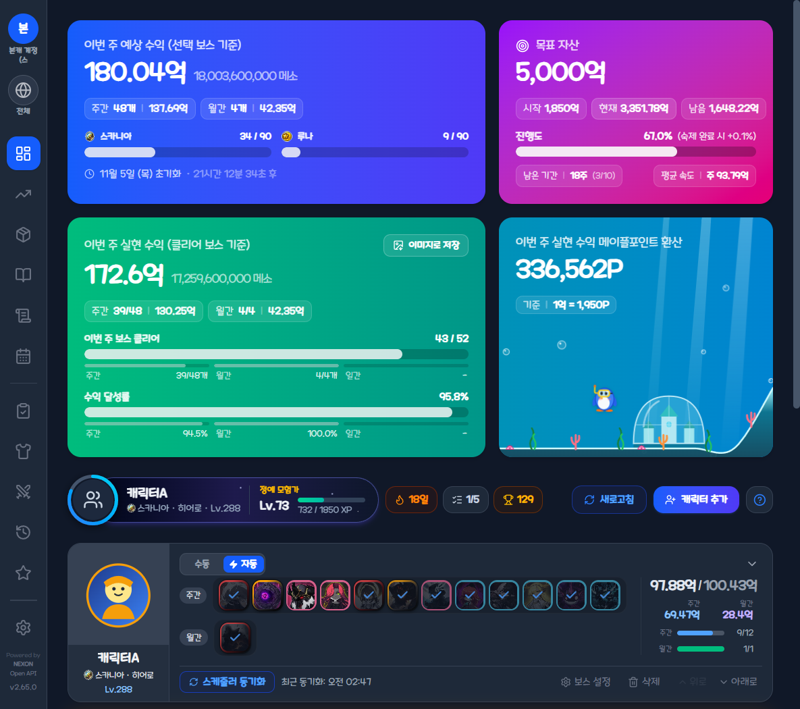

카드를 클릭하면 해당 페이지의 대표 화면과 세부 사용 설명으로 이동합니다.
주간·월간 보스 수익 정산, 월드 90개 한도 최적화, 260Lv+ 캐릭터 등록, 보스 프리셋
주간·월간 결정석, 드롭 아이템, 가계부 순수익 차트 및 주간/월간 결산 이미지 저장
보스 드롭 기록·보관함 관리, 파티 분배금 계산기, 빠른 등록 및 시세 변동 그래프
월간 수입·지출 요약, 카테고리 비중 차트, API 강화 비용 원클릭 불러오기
사냥 위젯(타이머·버프 알림), 소재비(30분 단위)·전후 차이 계산, 조각 환산 수익 통계
보스·드롭·가계부 일별 수익 달력 및 날짜별 상세 내역 팝업
에픽 던전, 몬스터파크, 길드 수로/플래그, 심볼 일일 퀘스트 API 동기화
장착 장비 24슬롯 그리드 및 스타포스·추옵·잠재·에디셔널 상세 툴팁
스탯·전투력, V매트릭스, 6차 HEXA, 심볼, 유니온, 어빌리티, 세트 효과, 링크 스킬
기간별(7일/30일/1년/전체) 경험치·레벨·전투력·유니온·아티팩트 레벨 성장 차트
스타포스·잠재능력·큐브 사용 이력 조회, 장비별 소비 메소 및 기댓값 대비 편차 분석
통합 프로필, 5개 다계정·API 키, 출석·펫·마을, 퀘스트, 업적·도감, 목표 자산·테마·정보
상단 다운로드 버튼으로 Maple-Income-Setup.exe 설치 (이후 앱 내 자동 업데이트 지원)
[설정 → 계정]에서 API 키 입력 시 캐릭터 목록·스케줄러·강화 이력 연동 활성화
[+ 캐릭터 추가]로 260Lv+ 캐릭터 일괄 등록 후 자동 모드 또는 18단계 프리셋 적용
매주 목요일 00시(KST) 자동 정산 및 12개 메뉴에서 수익·숙제·장비·스펙·강화 확인
각 페이지의 대표 화면 또는 [세부 사용 사진 및 설명 보기]를 클릭하면 하위 기능 화면과 설명이 펼쳐집니다.
/maplestory/v1/character/list): 계정 내 260Lv+ 캐릭터 검색·등록/maplestory/v1/scheduler/character-state): 보스 처치·일일/주간 숙제 동기화basic, stat, item-equipment, vmatrix, hexamatrix, union): 장비 툴팁·8개 스펙 탭·성장 차트/maplestory/v1/history/*): 스타포스·잠재능력·큐브 내역 및 가계부 연동safeStorage로 암호화되어 사용자 PC 내부에만 저장